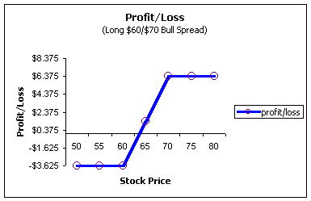
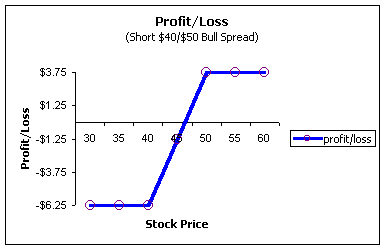
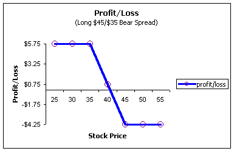
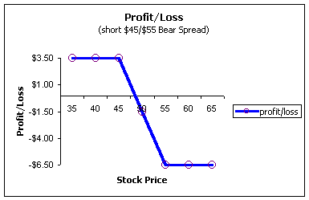
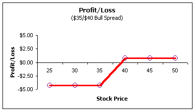
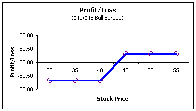

Spreads are strategies where the investor buys one option and sells another. There are many different types of spreads, and we will look at most of the major strategies. Spreads get their name because you are, in fact, spreading the risk when you enter into one of these transactions. One of the positions, either the long or the short, acts as a hedge and either makes the position cheaper or acts as protection from a runaway stock. We will look at this in a lot of detail later. But for now, just understand that you are spreading the risk and this, among other factors, is what makes spreads so popular and powerful.
In most situations, the trader is buying and selling an option in the same underlying stock or index. For example, long MRVC $35 call and short MRVC $40 call. These are collectively known as intra-market spreads because they are spreading within the same market. If you are long MRVC $35 and short INTC $45, this is an inter-market spread. The intra-market spreads are by far the most common and will be our only focus. Just be aware that you do not have to be long and short the same underlying for it to be considered a spread.
Important note: A lot of references will be made regarding pricing relationships about options. If you are not familiar with basic option pricing, you may want to read that section first before continuing.
The most basic spreads are the bull spread and bear spread. Each can be accomplished by using calls or puts for a total of four basic spreads. If you understand these four spreads, you will add an invaluable tool to your arsenal of option strategies!
As the name implies, bull spreads need an upward movement in the stock to be profitable. The term bullish actually gets its name from the way a bull attacks; it lowers its horns and then raises its head -- from low to high. Bull spreads can be placed with either calls or puts.
Bull spreads using calls
The bull spread using calls is one of the most common
spreads. This strategy involves the purchase of a lower
strike call and the sale (equal number of contracts) of
a higher strike call with all other factors the same
(i.e., same underlying stock or index and time to
expiration).
For example, a trader may buy 10 MRVC Jan $35 calls and sell 10 MRVC Jan $40 calls. This is sometimes referred to as a $35/$40 call bull spread.
Because the lower strike call will always be more expensive than the higher strike [1], this trade will result in a net debit. In order to make up for this debit, the trader will need the stock to move higher, hence the name bull spread. This spread is also known as a debit spread, price spread or vertical spread. We'll show you how to remember these names later.
[1] Remember, calls give you the right to purchase stock. With all else constant, investors will prefer to pay less for a stock, so they'll bid up the price of lower strike calls relative to the higher strikes. Again, please refer to our section on "Basic Option Pricing" for more information.
In this case, the trader is said to be long the $35/$40 bull spread. Why? As with any position, if you buy it, you are long; if you sell it, you are short. Because this trade resulted in a net debit (the trader paid for it), the trader is long the spread.
In a call debit spread such as this one, the short call (the $55 strike) acts as a way to bring in cash -- it reduces the cost basis of the long $50 strike. This is a great tool for option trading as it can allow you to buy lots of time without having to pay a lot of money.
Say it is November, you are bullish on SCMR, trading around $64, and want to buy 10 June $60 calls which are currently trading for $20-1/2. That trade will cost you $20,500 and could expire worthless. Because of the high price, many people avoid buying time in options and instead look at, say, a November $60 currently trading for $8. That call will cost you $8,000 for 10 contracts. Now, granted you can lose less money with the November contract; however, you have a much higher probability of doing so. Is there a better way? Yes, and the bull spread answers this problem for a lot of traders. Let's do a bull spread with SCMR and see the difference:
Buy 10 SCMR Jun $60 = $20 1/2
Sell 10 SCMR Jun $65 = $18 1/4
Net cost $ 2 1/4
Now, for only $2,250 expense, you will own 10 contracts but have all the way until June (8 months) to profit from it. Your tradeoff is that you will not profit above $65, but, that's not so bad. If the stock does get above $65 at expiration, this trade will be worth $5 for $2-1/4 down, or a profit of 122% or roughly 231% on an annualized basis. By using the spread tactic, you reduce the time-decay of the position and put the odds on your side that you will, in fact, get a very healthy profit.
Because options are so versatile, spreads can be versatile too. If you want more upside potential, maybe sell the June $70 call instead:
Buy 10 SCMR Jun $60 = $20 1/2
Sell 10 SCMR Jun $70 = $16 7/8
Net cost $3 5/8
Here you will pay $3,625 for 10 contracts. Yes, you now have more money at risk, but you also get more reward in that you profit all the way to $70 instead of $65. The financial adage "more risk, more reward" cannot be escaped, even in the options market. You can custom-tailor the spreads to exactly meet your needs. If the stock reaches $70 or higher at expiration, this trader will make $10 points for $3-5/8 initial investment for a profit of 175%, or 358% annualized.
What does the position look like from a profit and loss standpoint? (Please see our section on "Profit and Loss Diagrams" if you are not familiar with these diagrams.)
We can see that the most the trader can lose is the $3-5/8 -- the amount paid. The most the spread can be worth is $10 points, so the max gain must be the difference or $6- 3/8. Where is the break-even point? The trader needs to make back the $3-5/8 initially paid. If the stock is trading for $63-5/8 at expiration, the long call will be worth exactly $3-5/8 and the short call will be worthless; the break-even is therefore $63-5/8.
This trader will profit if the spread widens. In other words, he wants the spread to increase in value so that it can be sold for a profit.
No matter how high the stock goes above $70, the most this trader will make is $6 3/8. The bull spread has a limited downside as well as upside; the trader is trying to capture the 10-point move between $60 and $70.
Bull spreads using puts
A bull spread with puts is a strategy where the trader
buys a low strike put and sells a higher strike put in
equal quantities. Because a higher strike put will
always be worth more (all else constant)[2],
this trade will result in a credit to the account.
[2] Put options give the owners the right to sell stock. With all else constant, investors prefer to sell for higher prices so they will bid up the prices of higher strike puts relative to lower strike puts. Again, please refer to our section on "Basic Option Pricing" for more information.
For example, a trader may buy 10 MRVC $40 puts and sell 10 MRVC $50 puts. This is also called a $40/$50 put bull spread.
This spread is also known as a credit spread, vertical spread, or price spread.
This trader is said to be short the $40/$50 bull spread because of the resulting credit to the account. This trader is hoping for the spread to "shrink" (as is any short seller) so that it may be purchased back later at a profit. How will a bull spread using puts shrink? Only if the stock moves up (actually, this spread can also profit by sitting still too; it just cannot move down) hence the name bull spread.
Say you are bullish on MRVC trading at $39 1/2. You elect to do the following bull spread with puts:
Buy 10 Apr $40 puts = $12 1/2
Sell 10 Apr $50 puts = $16 1/4
Net credit $3 3/4
You will receive a credit of $3,750 to your account and will profit by this amount if the stock closes above $50. If the stock is $50 or higher at expiration, both puts expire worthless and the spread shrinks to zero -- exactly what you want it to do!
Let's look at the profit and loss diagram for the short $40/$50 bull (credit) spread.
It is easy to see, by looking at the chart, you will make $3- 3/4 maximum; that's assuming the stock closes at $50 or higher on expiration. However, this $3-3/4 credit does not come for free. In exchange, you must be willing to assume a downside risk of $6-1/4. Why? Remember, the higher strike put is more valuable, and that is the one you sold. If the stock falls, the higher strike put becomes more valuable to the owner and equally less valuable to you! But, if the stock continues to fall below $40, then your long $40 put starts to become valuable to you. So the spread can only be worth $10 at a maximum to the owner or negative $10 to you, the seller. Because you brought in $3-3/4 for the initial trade, the most you can lose is $10 - $3-3/4 = $6-1/4. Where is the break-even point? You took in $3-3/4 initially, right? So the $50 put can go against you by this amount at expiration. So if the stock is trading at $50 - $3-3/4 = $46-1/4 at expiration, then your short $50 put will be worth negative $3-3/4 to you, and your long put will be worthless; you will just break even.
Notice also, that the above two profit and loss charts have exactly the same shape. This is another way to identify a bull spread, as they will always have this similar shape.
There are a lot of people and books that claim there is no difference between the two types of spreads. This is totally false. There is a big difference in the underlying assumptions, depending on what they are, the call or put spread will be better suited.
We saw that, for the debit spread, the trader must have the stock move higher as the trader must make up for the debit. The credit spread; however, does not need the stock to move; it just cannot move down.
PWAV is currently $44-1/2. Let's compare the debit and credit spreads:
Debit Spread
Buy Dec $45 Call = $6 7/8
Sell Dec $50 Call = $4 1/4
Net debit $2 5/8
Credit Spread
Buy Jun $40 Put = $4 3/4
Sell Jun $45 Put = $6 3/4
Net credit $2
The trader using calls (debit spread) will pay $2-5/8 while one using the puts (credit spread) will receive $2. If the stock sits still, the call trader will lose $2-5/8 while the put trader will gain $1-1/2. How? If the stock is still $44- 1/2 at expiration, both calls will be worthless; the long bull spread will lose the entire premium.
For the credit spread, if the stock is $44-1/2 at expiration, the short put will be worth -$1/2 and the long put worthless. The credit spreader will take a loss of $1/2 from the short position, but keep the $2 from the initial trade for a gain of $1- 1/2.
So is the credit spread the best? After all, in this example, it seems like you get the best of both worlds. You get paid for the position, and you don't need the stock to move in order to profit. Here's the catch, if you are wrong in your assumption about the direction of the stock and it falls, the debit spread can only lose the amount of the debit or $2-5/8 while the credit spread can lose $3.
The differences in the two types of spreads, either debit or credit, have to do with your assumptions on how quickly the underlying stock will move (please see our section on deltas and gammas for further details).
You may have noticed something about the two spreads we have been discussing. The debit trader is really only interested in purchasing the more valuable call. By entering the spread, the trader can reduce the premium paid for this long position.
For the credit spreader, their goal is to short the more valuable strike and receive a premium; however, the trader is now exposed to potentially unlimited losses. So by entering the spread, they hedge themselves in case the stock moves the other way.
There is a somewhat comical, although valuable way of understanding the philosophies between credit or debit spreads. We can say the debit spreader is "cheap" since they do not want to pay a lot for the long call position by itself. Selling the higher strike reduces the price.
For the credit spreader, they are "chicken," as their goal is to short the more valuable strike. But they are fearful of the unlimited downside risk, so buying another position gives them a hedge.
So remember "cheap" or "chicken" to help identify the underlying philosophies!
A bear spread, as the name implies, desires the stock or index to fall. The term bearish gets its name from the way a bear attacks; it raises its paws and strikes down -- from high to low. As with the bull spreads, bear spreads can be executed through calls or puts.
This strategy involves the purchase of a high strike put and the sale of a lower strike put with all other factors the same.
Because you are buying the higher strike put, it will always be worth more and result in a debit. In order for the trade to make money, the stock must fall -- hence the name bear spread.
Let's say you are bearish on INTC; you think the price will fall. You could enter the following spread:
Buy Apr $45 put = $6 1/2
Sell Apr $35 put = $2 1/4
Net debit $4 1/4
This trader would be long the $45/40 bear spread. As before, this trader is long because a premium is paid.
Let's run through the idea of the spread again. This trader is really interested in owning the $45 strike because it is the most valuable of the two puts. However, he does not want to pay $6-1/2. By entering the spread, he can own it for only $4-1/4. Using our "cheap or chicken" method, this trader is "cheap." The tradeoff is that he can only profit to a fall of $35.
At expiration, if INTC is $45 or higher, this trader loses the entire premium of $4-1/4. If the stock is $35 or below, the trader will make the full spread of $10 less the amount paid of $4-1/4 for a total profit of $5-3/4. In order to break even, the trader must be able to sell the long position for $4-1/4, which means the stock will have to be this amount in-the-money or $40-3/4. As with any debit spread, this trader wants the spread to widen so that it may be sold for a profit.
Let's take a look at these numbers on the profit and loss diagram:
The chart confirms what we figured out intuitively. Also notice that the bear spread profit and loss diagram is opposite that of the bull diagrams above. The bear spread profits from a downward move in the stock.
This trader is really only interested in shorting (selling) the $45 call. However, because of the unlimited risk to the upside, he buys a $55 call for protection. This follows the "chicken" philosophy. Now it should be evident why the trader would spend the money to buy the $55 call.
For example, a trader could buy a $50 call and sell a $45. Because the lower strike will always be more valuable, this trade will result in a credit.
Let's use INTC again but with calls instead.
Sell Apr $45 call = $8 1/8
Buy Apr $55 call= $4 5/8
Net credit $3 1/2
At expiration, if INTC is below $45, both puts expire worthless and the trader will profit by the $3-1/2 credit. If the stock is above $55, the trader will lose $10 on the spread, but will offset this loss by the initial premium for a net loss of $6-1/2. In order to break even, the trader can afford to have the lower strike call move $3-1/2 points against him for a closing stock price of $48-1/2 at expiration. At this point, he will owe $3-1/2 for the short position, which exactly offsets the original premium so he breaks even.
The following profit and loss diagram should confirm this:
Again, as expected, this bear spread has the same shape as the bear spread above. We see that the maximum profit is in fact $3-1/2 and the maximum loss is $6-1/2.
Because this trader received a credit from the initial transaction, he wants the spread to narrow so that it can be purchased back cheaper or expire worthless. Either way will result in a profit.
One of the biggest mistakes investors make using spreads is to fail to understand the risk-reward concept. This usually leads to unsuitable trades based on the investor's risk-reward profile or outlook on the stock. Let's look at an example:
INTC is now trading for $44-7/8 with the following quotes for December available:
$35/$40 spread =; $4 1/4
$40/$45 spread =; $3 3/8
$45/$50 spread = $2 1/2
$55/$60 spread = $11/16
Novice investors will look at quotes such as these and think the $55/$60 spread is the best because they pay only $11/16 and can make a maximum of $5 on the spread for a $4-5/16 profit. It certainly sounds better than paying $4-1/4 for the $35/$40 spread and only making $3/4 profit.
The reason the $55/$60 spread is relatively cheap is because it is an out-of-the-money spread; remember, the stock is trading at $44-7/8 so neither option is in-the-money. It is a higher risk strategy, relative to the other spreads listed, so it should be trading for a cheaper price and have a higher reward.
The $35/$40 spread is an in-the-money spread as both options have intrinsic value. This spread will grow to a maximum of $5 without the stock moving -- just as long as the stock does not fall below $40 by expiration. It is much less risky than the other two spreads so should be trading for a higher price and have a lower reward.
When looking at profit and loss diagrams on spreads, you can immediately see the relative risk in strategies. Take a look at the profit and loss diagrams for the four spreads listed above:
|

|